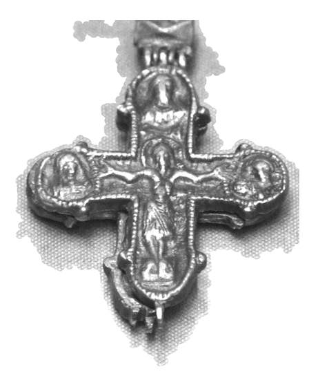

Catalog › CE-0586 · COM2026-115036580
Encolpion de bronz, Kiev, sec. XI–XIII, Przemyśl
sec. XI–XIII (1001–1300) · loc necunoscut
double-sided reliquary cross (enkolpion), bronz; c. XI–XIII (1001–1300); find spot unknown.


Identificare
- Categorie
- Encolpion bivalv (relicvar)
- Material
- Bronz
Iconografie
- Descriere avers
- Hristos răstignit, medalioane pe brațe și la capete (fotografie).
Datare și atribuire
- Datare
- sec. XI–XIII (1001–1300)
- Centru
- Rusia Kieveană
Păstrare și referințe
- Bibliografie
- Fotografie: Silar, Wikimedia Commons, licență CC BY-SA 4.0, https://commons.wikimedia.org/?curid=115036580 (accesat 17.10.2026).
- Figura
- Wikimedia Commons, pagina 115036580
- Observații
- Descrierea de pe Commons: „bronze encolpion, Kiev, 11-13th century, Pzemyśl”. Muzeul nu e indicat explicit (titlul pomenește Przemyśl). Coordonate: nu sunt date în sursă.
Citare: Corpus Encolpiorum, CE-0586, Encolpion de bronz, Kiev, sec. XI–XIII, Przemyśl, --root/piese/COM2026-115036580/ (accesat 2026-10-20).